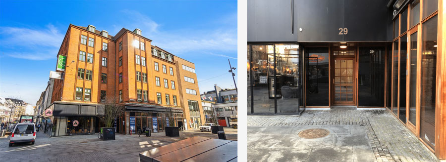

Forside
Jeg kan lide at undersøge hvordan lyd, bevægelse, farver og former gør noget forskelligt ved mig. Hvordan mit åndedræt kan mærke om tempoet i en bevægelse er tilpas… Hvordan kroppen føler sig velkommen når farverne har de perfekte nuancer… Hvordan bestemte lyde, ord eller teksturer kan få maven til at trække sig sammen… —og andre kan skabe plads…
Derfor ønskede jeg mig, at min hjemmeside også kunne være en slags eksperimentarium, hvor besøgende kan få mulighed for netop det: At lytte… At betragte… At registrere impulser til for eksempel at skrue op for lyden eller lukke øjnene...
Her er fri entre—vær så god
Læs mere
- Lidt om mig...
- Somatic Experiencing®
- Musikterapi
- Intensive Interaction
- Min mission
- Priser og praktisk info
- Din tryghed og sikkerhed
Kontakt
Email: manna_mus[at]hotmail.com
Telefon: (+45) 24 80 28 16
Lidt om mig...
Jeg kan godt lide farver, lyde, duften af citronskal, når andre mennesker bliver begejstrede og at røre ved forskellige overflader…
Jeg kan ikke lide melede æbler, at fryse, når nogen er uærlige…
Jeg har siden 2010 arbejdet indenfor specialområdet med børn, unge og voksne. Det har givet mig mange, mange erfaringer med betydningen af at ”være i kontakt”—både med sig selv og med andre.
Det har også vist mig, at mennesker grundlæggende søger det samme for at trives—uanset alder og forudsætninger: Tryghed og forbundethed—oplevelsen af at blive hørt og forstået—at blive mødt og føle sig velkommen.
Jeg er ansat på Djurslandsskolen som musikterapeut og Intensive Interaction koordinator.
Min uddannelsesmæssige baggrund i store træk:
- Traumeterapi—Somatic experiencing Practitioner®, Coherence Traumehealing 2024
- Basal kommunikation—Intensive interaction koordinator, Intensive Interaction Danmark 2021
- Musikterapi—Uddannet cand. Mag. i musikterapi, Aalborg Universitet 2008

Musikterapi
Musik kan rumme, ramme og regulere—sansninger, følelser og kontakten mellem mennesker.
Kontakten, eller samspillet, mellem mennesker er musikalsk. Med nogen kan det være svært at finde melodien, mens vi med andre straks fornemmer, at vi swinger godt sammen.
Når vi taler, trækker vejret og bevæger os, har vi en rytme, vores stemme har klang og hjerteslaget er vores puls.
Vores kroppe og nervesystemer registrerer og reagerer på eks. stemningsskift i musik—både når vi lytter og når vi selv frembringer lyd.
Uddannelsen til musikterapeut er min base og mit faglige fundament, som jeg fortsat har suppleret med viden, om de nicher jeg har været særligt optaget af: Krop, kontakt og kommunikation og hvor forskelligt og nuanceret dét kan se ud.
Musikterapi har ikke en bestemt form eller et fast indhold. Det afhænger helt af den enkeltes præferencer og ”personlige soundtrack” hvordan lyd, stilhed, bevægelse og pause kan være til stede i den terapeutisk proces.
Du behøver ikke at spille et instrument.
Læs mere om musikterapi her: Center for dokumentation og forskning i Musikterapi (CEDOMUS) - Aalborg Universitet
Intensive Interaction
—når kontakten ikke kommer af sig selv
Muligheden for social kontakt, at kunne dele sin verden med et andet menneske og at opleve at høre til er basale behov, som er helt afgørende for vores trivsel.
Nogle gange kommer det ikke af sig selv…
Med et ønske om at blive en bedre lytter og legekammerat har jeg siden 2015 været optaget af en—oprindelig specialpædagogisk tilgang—intensive interaction.
Intensive Interaction er en tilgang, der er rettet direkte mod at fremme kommunikation og samspil med mennesker, med kommunikative handicaps, bl.a. autisme-spektrum-tilstande, intellektuelle handicaps, udviklingsforstyrrelser og -forsinkelser.
Tilgangen er baseret på omfattende viden fra udviklingspsykologien. Herfra ved vi, at for at lære at være i kontakt, må det ske gennem trygt, meningsfuldt samspil, hvor der er plads og tid til, at det menneske, der har mindst erfaring med at kommunikere får mest indflydelse.
Mennesker med kommunikative handicaps har ikke mindre brug for psykoterapi end andre. Derfor har mit fokus været på, hvordan II kan styrke og spille sammen med en terapeutisk indsats.
Læs mere om II her: Forside - Intensive Interaction Danmark
Somatic
Experiencing (SE)—
når kroppen husker—og vi lytter
Når vi er udsat for en trussel, reagerer vi instinktivt med kamp eller flugt. Hvis ingen af delene er muligt, reagerer vi med fastfrysning—dvs. en høj grad af ”aktivering” af nervesystemet, dét vi oplever som spænding og anspændthed.
Hvis vores nervesystem for længe er for meget på arbejde, kan vi for eksempel opleve:
- Uro—i kroppen, hovedet eller begge dele
- Irritation—måske uden indlysende årsag
- Følelse af tomhed—alt bliver ligegyldigt
- Øget sensitivitet (lyd, lys, lugte, smagsindtryk, konsistenser, berøring, bad, materialer/underlag/omgivelser)
- Søvnbesvær—svært ved at falde i søvn/sove igennem, sover meget eller meget lidt
- Manglende lyst—til at være social, til at spise, til at stå op, til at gøre ting du plejer at kunne lide
- Tristhed
- Følelsen af at være udenfor eller ved siden af
- Smerter og spændinger
Ovenstående symptomer kan være tegn på, at vi har fået en ”skade i tryghedssystemet”.
SE er en tilgang, der nænsomt arbejder med kroppens tilstand og kapacitet til at balancere spænding og afspænding. Processens omdrejningspunkt er opmærksomheden på kroppens impulser, sansninger og forandringer og vil foregå i et tempo, der er trygt og tilpas.
Hvis alle indtryk og fornemmelser opleves lige intenst, kan kroppen blive et utrygt sted at være. Trykket fra en fyldt blære, hjertets slag og det at trække vejret kan skabe uro.
Når man ikke selv kan rumme og regulere ubehag kan det betyde at der er situationer/personer/steder/oplevelser man undgår.
Nervesystemet har brug for, i sit eget tempo, at lære at genkende tryghed og sikkerhed, at skelne behag fra ubehag.
Det kan vi undersøge i terapien.
Læs mere om SE her: Hvad er SE? Bliv klogere på Somatic Experiencing® her
Min mission—
terapi på dine præmisser
Alle har ret til psykoterapi på en måde, der giver mening—det vil blandt andet sige at blive mødt i og med sin foretrukne kommunikation.
Har man eks. en atypisk måde at kommunikere på, et nervesystem der sanser og lagrer alle indtryk, en krop der ”snakker” og et hoved, der aldrig holder fri, er der brug for en terapeutisk ramme der påskønner og tager udgangspunkt i lige præcis det. Det kan også være, du ganske enkelt foretrækker et terapeutisk rum, hvor der skrues ned for samtalen for at give plads til noget andet.
Det vil jeg gerne tilbyde.
Priser og praktisk info—
sådan foregår det
Prisen for 60 minutters terapi er i udgangspunktet 800 kr.
Som Studerende/arbejdsledig/pensionist betaler du 720 kr.
Måske er en hel time meget lang tid for dig. Derfor er det muligt at booke halve timer à 30 minutter.
Her er satsen 400 kr. - 360 kr. til reduceret pris.
Betaling på mobilepay eller via bankoverførsel.
Jeg har lokale i Ryesgade 29, 3. sal, 8000 Århus C. Der er gode bus- og togforbindelser.

Hvis du foretrækker at være i kendte rammer, kommer jeg gerne til dig – enten inde eller ude.
Indenfor Ringvejen uden beregning. Ved større afstande beregnes transport efter gældende satser.
Bamser, bolde, dukker, bløde tæpper, glatte sten, yndlings-biler, Ipads, kasketter, kaffekrus, hættetrøjer og andre trygheds-ting er velkomne.
Det er på nuværende tidspunkt muligt at booke tider i Ryesgade om lørdagen.
Er du forælder eller fagperson og ønsker at høre nærmere om terapi eller evt. vejledningsforløb så tag endelig kontakt.
Mobil: 24802816 - jeg har ikke fast telefontid. Læg en besked, send en sms eller kontakt mig pr. mail.
Mail: manna_mus[at]hotmail.com
Din tryghed
og sikkerhed
Jeg er medlem af Dansk Musikterapeutforening, Psykoterapeut MPF og SE®-Practitioner og derfor underlagt både tavshedspligt og de gældende etiske retningslinjer.


Etiske Retningslinjer - Dansk Musikterapeutforening
Etikregler—Dansk Psykoterapeutforening